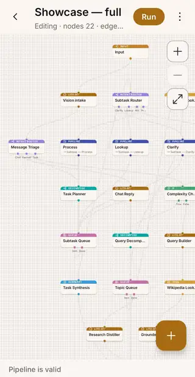

Knotwork: build your agent
ذكاء اصطناعي
Knotwork is an AI agent that runs its model on the phone. Instead of a prompt box wired to somebody's API, every conversation runs through a pipeline you can open and edit: a graph of typed nodes - input, on-device LLM, optional cloud LLM, tool call, routing, decomposition, evaluation, clarification
✓ ترخيص مفتوح (Apache-2.0) · آخر تحديث: 2026-11-20
0.15.0الإصدار
62.4 MBالحجم
Apache-2.0الرخصة
Open in Kanzتحميل APK (62.4 MB)
Download APK
SHA-256: 972b48adef668066f18c7b8fa0a15ef8a6ca4fc72a016b5f6ea438a651788f0a

امسح الكود لفتح صفحة التطبيق
Scan to open this app page
لو كنز مش متثبت عندك: نزّل متجر كنز.
Not installed? Get the Kanz store.